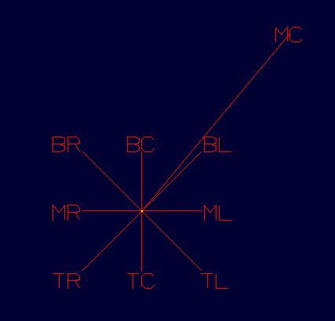
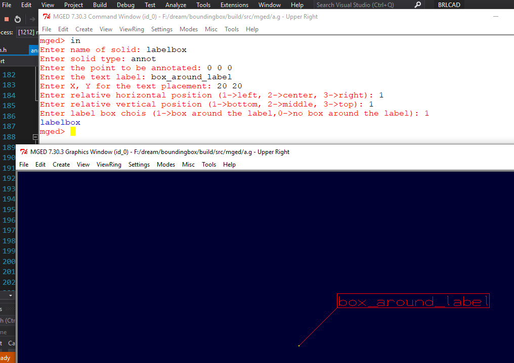
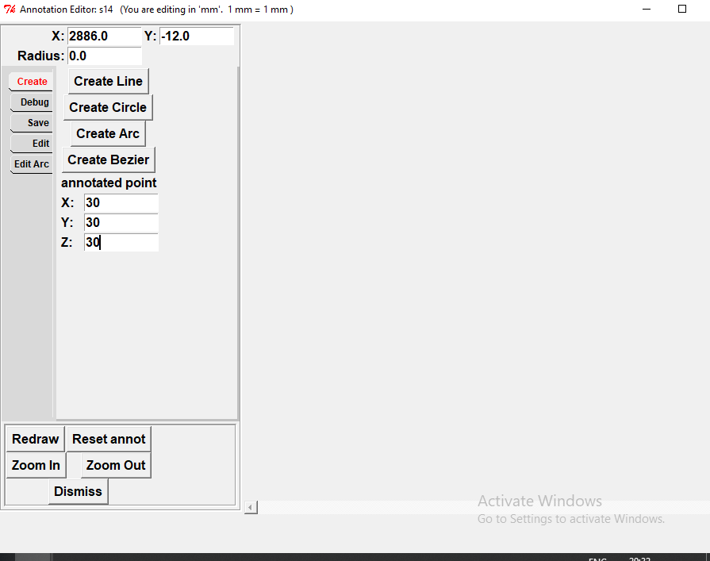
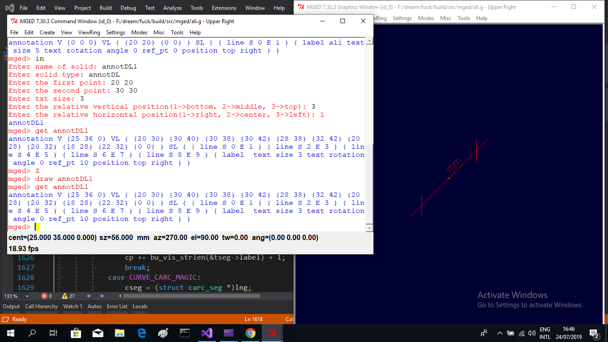
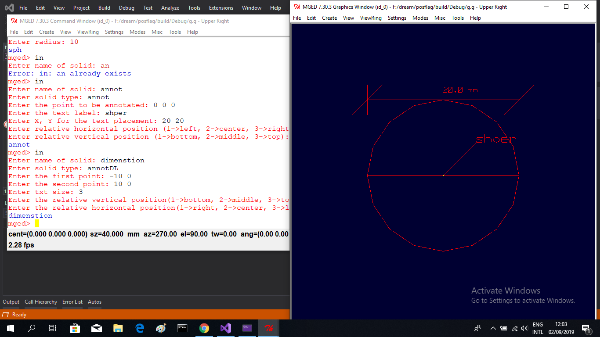

Annotations:Implement more annotation support: labels, notes, and dimensions| Project Report
The project was divided into three parts:
- Fixing bugs in the annotation primitive.
- Extending the current annotation to have more features.
- Testing.
Fixing bugs in the annotation primitive
-
- Annotation leader line bug: the annotation leader line was invisible because of an uninitialized variable.
https://sourceforge.net/p/brlcad/patches/524/#0549
-
- Short annotations bug: using numbers for label results in no label "short annotation is not drawn":
the cause of this bug is that all the annotation points are in display space and we should consider just the point that exists in the model space.
https://sourceforge.net/p/brlcad/patches/526/#62e8
-
- new bounding box function:
the existed bounding box function was dealing in a wrong way with the long annotations because it's vlist is constructed from more than one memory chunk so the display mode was not memorized by the old function.
https://sourceforge.net/p/brlcad/patches/527/#f953
-
- Position adjustment of the annotations:

the old implementation of the annotation considered just the top right (TR) relative position of the text with respect to the reference point. this patch implements the nine possible relative positions
https://sourceforge.net/p/brlcad/patches/530/#38f2
-
- Bug in L command when used on the annotation primitive: there inconsistent behavior in exporting and importing the label of the annotation to the database this patch fix that
https://sourceforge.net/p/brlcad/patches/531/#204c
-
- Bug due to ant_label_dimensions() function: this bug was due to wrong initialization of bu_list structure in this function.
https://sourceforge.net/p/brlcad/patches/534/#bbe2
Extending the current annotation to have more features
-
- Drawing a bounding box around the label text:
The user may want to have a box around the text this patch implement this feature.

https://sourceforge.net/p/brlcad/patches/537/#8aa5
-
- Annotations editor: this feature is implemented based on the existing sketch editor.

https://sourceforge.net/p/brlcad/patches/533/#cdc1
https://sourceforge.net/p/brlcad/patches/528/#0a9c
-
- Dimension line annotation: this feature enables the user to add a dimension line between two points in the wireframe view.

https://sourceforge.net/p/brlcad/patches/536/#2428
-
- Extending the annotation text segment structure: the text segment size and rotation angle was fixed this patch add these parameters to the text segment structure.
https://sourceforge.net/p/brlcad/patches/535/#6160
-
- Extending the annotation internal to have 3d verts vector this will be used for the future development of the dimension line
https://sourceforge.net/p/brlcad/patches/532/#1a9d
Testing
-
- We have made some test on the added features and a unit test program to test a function in vlist.c.
https://sourceforge.net/p/brlcad/patches/529/#31d8
Here is the link to my Proposal The tasks mentioned in the proposal are either completed or approached partially and needs work and discussion with the society.

Project Extension
- These are some of the tasks that I aim to work on in the near
future:
- Closing all the open issues and keep developing the annotation primitive.
- Refining the bounding box for the text.
- Develope the dimension line annotation.
- Determine and define the annotation types supported by in command.
- Develope a new command for other types of annotations
Documentations
- Documentations has been provided dimension_line , label_box
- Link to my daily logs.